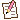

Se puede vender y aun así no ganar nada. Diseñé una herramienta para evitarlo.
9 de cada 10 microemprendedores de productos hechos a mano que encuesté vendieron alguna vez sin tener ganancia: la razón es que no incluyen todas las variables importantes en sus precios. Netia les calcula el precio para que sus ventas cubran costos, sueldo y ganancia para mantener y hacer crecer su emprendimiento.

Leer case study- Abrir plataforma live